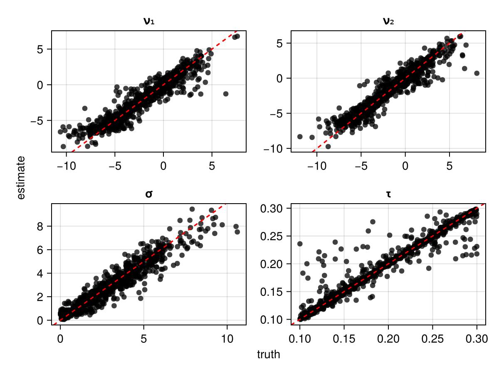
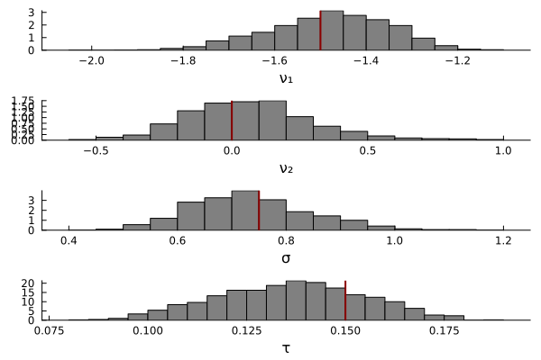

Introduction
The purpose of this example is to illustrate how to perform Bayesian parameter estimation with a neural parameter estimation. Neural parameter estimation learns the mapping between simulated data and the parameters of a model (Zammit-Mangion et al., 2024; Sainsbury-Dale et al., 2024; Radev et al., 2023). Neural parameter estimation constitutes a method of amortized inference, whereby a large upfront computational cost is incurred during training to enable rapid parameter estimation with the trained neural network. One benefit of amortized inference is that the neural network can be saved and reused to estimate parameters on multiple datasets. Additionally, neural estimator estimator called normalizing flows. Normalizing flows are a special type of invertible neural network which can learn the posterior distribution by learning the mapping between parameters and the corresponding simulated data.
Overview
In the example below, we estimate the parameters of the lognormal race model (LNR; Heathcote et al., 2012; Rounder et al., 2015) with the package NeuralEstimators.jl. We will use a normalising flow network in order to estimate the full posterior distribution of the LRN parameters. Generally speaking, neural parameter estimation is most useful for models with an intractible likelihood function, such as the leaky competing accumulator (Usher, M., & McClelland ). However, some of its key parameters are notoriously difficult to recover. As an alterntaive, we will use the LNR because its parameters have good estimation properties and can be easily recovered (Rounder et al., 2015).
Full Code
You can reveal copy-and-pastable version of the full code by clicking the ▶ below.
Show Full Code
using AlgebraOfGraphics
using CairoMakie
using Distributions
using Flux
using NeuralEstimators
using Plots
using Random
using SequentialSamplingModels
Random.seed!(544)
n = 2 # dimension of each data replicate
m = 100 # number of independent replicates
d = 4 # dimension of the parameter vector θ
w = 128 # width of each hidden layer
function sample_prior(K)
ν = rand(Normal(-2, 3), K, 2)
σ = rand(truncated(Normal(1, 3), 0, Inf), K)
τ = rand(Uniform(0.100, 0.300), K)
θ = vcat(ν', σ', τ')
return θ
end
to_array(x) = Float32[x.choice'; x.rt']
simulate(θ, m) = [to_array(rand(LNR(ϑ[1:2], ϑ[3], ϑ[4]), m)) for ϑ ∈ eachcol(θ)]
# Approximate distribution
approx_dist = NormalisingFlow(d, 2d)
# Neural network mapping data to summary statistics (of the same dimension used in the approximate distribution)
ψ = Chain(x -> log.(x), Dense(n, w, relu), Dense(w, w, relu))
ϕ = Chain(Dense(w, w, relu), Dense(w, 2d))
network = DeepSet(ψ, ϕ)
# Initialise a neural posterior estimator
estimator = PosteriorEstimator(approx_dist, network)
# Train the estimator
estimator = train(
estimator,
sample_prior,
simulate;
m,
K = 25_000
)
# Assess the estimator
θ_test = sample_prior(1000)
data_test = simulate(θ_test, m)
assessment = assess(estimator, θ_test, data_test; parameter_names = ["ν₁", "ν₂", "σ", "τ"])
bias(assessment)
rmse(assessment)
recovery_plot = AlgebraOfGraphics.plot(assessment)
# perform Bayesian parameter estimation on simulated data
θ = [-1.5, 0, 0.75, 0.250]
data = simulate(θ, m)
post_samples = sampleposterior(estimator, data)
Plots.histogram(
post_samples',
layout = (4, 1),
color = :grey,
norm = true,
leg = false,
grid = false,
xlabel = ["ν₁" "ν₂" "σ" "τ"]
)
vline!([θ'], color = :darkred, linewidth = 2)Load Dependencies
The first step is to load the dependencies. NeuralEstimators and Flux are the primary packages for performing Bayesian parameter estimation with normalizing flows. We will also load AlgebraOfGraphics, CairoMakie, and Plots to visualize the parameter recovery and posterior distributions.
using AlgebraOfGraphics
using CairoMakie
using Distributions
using Flux
using NeuralEstimators
using Plots
using Random
using SequentialSamplingModelsIn the code block below, we set the seed for the random number generator so that the results are reproducible.
Random.seed!(544)Simulation Functions
As previously noted, normalizing flow neural networks learn the mapping between the prior distribution and simulated data. Once that mapping is learned, the network is inverted to allow one to sample from posterior distribution. We define two functions to generate training data–-one to sample from the prior distribution, and another to sample data from the model, given a sampled parameter vector from the prior distribution.
Sample from Prior Distribution
In the code block below, the $K$ samples are generated from each prior and concatonated into a $4 \times K$ array.
function sample_prior(K)
ν = rand(Normal(-2, 3), K, 2)
σ = rand(truncated(Normal(1, 3), 0, Inf), K)
τ = rand(Uniform(0.100, 0.300), K)
θ = vcat(ν', σ', τ')
return θ
endSample from Model
The code block below specifies the function simulate to sample simulated data from the model. In this function, $\theta$ is a $4 \times K$ array, with each column representing an independent sample from the prior distribution, and $m$ is the number of trials sampled from the model per sample from the prior. The helper function to_array transforms the data into the required format: an $m \times 2$ array in which the first column consists of choice indices, and the second column consists of reaction times.
to_array(x) = Float32[x.choice'; x.rt']
simulate(θ, m) = [to_array(rand(LNR(ϑ[1:2], ϑ[3], ϑ[4]), m)) for ϑ ∈ eachcol(θ)]Configure Neural Network
In this section, we will configure the neural network to perform Bayesian parameter estimation. At a high level, the neural network has two primary components. The first component is the DeepSet neural network, which compresses the data by learning summary statistics describing the distribution of data. The second component is an invertible neural network called a NormalisingFlow. A normalising flow transforms a set of simple base distributions to approximate a complex distribution (see below). Importantly, because normalising flows are invertible, they can be used to sample from the posterior distribution.
 The sequential transformation process of a normalising flow. Credit.
The sequential transformation process of a normalising flow. Credit.
# Approximate distribution
approx_dist = NormalisingFlow(d, 2d)
# Neural network mapping data to summary statistics (of the same dimension used in the approximate distribution)
ψ = Chain(x -> log.(x), Dense(n, w, relu), Dense(w, w, relu))
ϕ = Chain(Dense(w, w, relu), Dense(w, 2d))
network = DeepSet(ψ, ϕ)
# Initialise a neural posterior estimator
estimator = PosteriorEstimator(approx_dist, network)Train the Neural Network
Next, to train the neural estimator, we pass the estimator, the function sample_prior, and the function simulate to the function train.
estimator = train(
estimator,
sample_prior,
simulate;
# the sample size
m,
# the number of training examples
K = 25_000
)Assess the Accuracy of the Neural Network
As shown in the code block below, the package NeuralEstimators provides three ways to assess the accuracy of the neural network: bias, rmse, and scatter plots of the parameer recovery. The parameter recovery plots below indicate that the neural network learned the mapping well.
θ_test = sample_prior(1000)
data_test = simulate(θ_test, m)
assessment = assess(estimator, θ_test, data_test; parameter_names = ["ν₁", "ν₂", "σ", "τ"])
bias(assessment)
rmse(assessment)
recovery_plot = AlgebraOfGraphics.plot(assessment)
Perform Bayesian Parameter Estimation
Now that the neural network has been trained, we can perform Bayesian parameter estimation. In the example below, we simulate data from the model using parameters defined in the vector $\theta$. The estimator and data are passed to sampleposterior, which generates samples from the posterior distribution of parameters. As expected, the histogram shows that the posterior distributions are near the true parameter values, displayed as red vertical lines.
θ = [-1.5, 0, 0.75, 0.150]
data = simulate(θ, m)
post_samples = sampleposterior(estimator, data)
Plots.histogram(
post_samples',
layout = (4, 1),
color = :grey,
norm = true,
leg = false,
grid = false,
xlabel = ["ν₁" "ν₂" "σ" "τ"]
)
vline!([θ'], color = :darkred, linewidth = 2)
Save the Trained Neural Network
using BSON: @save
using Flux
model_state = Flux.state(estimator)
@save "lnr_estimator.bson" model_stateYou can load the trained neural network into a new Julia session with the @load macro from BSON. In order to successfully reuse the trained neural network, you will need to initialize the neural network before passing the trained parameters. You can reveal copy-and-pastable version of the full code by clicking the ▶ below.
Show Full Code
using BSON: @load
using Distributions
using Flux
using NeuralEstimators
using SequentialSamplingModels
Random.seed!(544)
n = 2 # dimension of each data replicate
m = 100 # number of independent replicates
d = 4 # dimension of the parameter vector θ
w = 128 # width of each hidden layer
# Approximate distribution
approx_dist = NormalisingFlow(d, 2d)
# Neural network mapping data to summary statistics (of the same dimension used in the approximate distribution)
ψ = Chain(x -> log.(x), Dense(n, w, relu), Dense(w, w, relu))
ϕ = Chain(Dense(w, w, relu), Dense(w, 2d))
network = DeepSet(ψ, ϕ)
# Initialise a neural posterior estimator
estimator = PosteriorEstimator(approx_dist, network)
# load the weights
@load "lnr_estimator.bson" model_state
Flux.loadmodel!(estimator, model_state)References
Heathcote, A., & Love, J. (2012). Linear deterministic accumulator models of simple choice. Frontiers in psychology, 3, 292.
Sainsbury-Dale, Matthew, Andrew Zammit-Mangion, and Raphaël Huser. "Likelihood-free parameter estimation with neural Bayes estimators." The American Statistician 78.1 (2024): 1-14.
Radev, S. T., Schmitt, M., Schumacher, L., Elsemüller, L., Pratz, V., Schälte, Y., ... & Bürkner, P. C. (2023). BayesFlow: Amortized Bayesian workflows with neural networks. arXiv preprint arXiv:2306.16015.
Rouder, J. N., Province, J. M., Morey, R. D., Gomez, P., & Heathcote, A. (2015). The lognormal race: A cognitive-process model of choice and latency with desirable psychometric properties. Psychometrika, 80(2), 491-513.
Zammit-Mangion, Andrew, Matthew Sainsbury-Dale, and Raphaël Huser. "Neural methods for amortized inference." Annual Review of Statistics and Its Application 12 (2024).